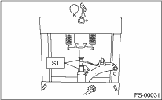
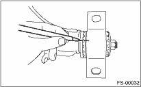

FRONT SUSPENSION > Front Transverse Link
DISASSEMBLY
1. FRONT BUSHING
Using the ST, press the front bushing out of place.

2. REAR BUSHING
1. Place alignment marks on the transverse link and rear bushing.
2. Loosen the nut and remove the rear bushing.
